82秒獨立前言・本輪僅改字幕與說話者識別
人物、背景、17段台詞與82秒節奏均未修改。色彩識別與特效不會改寫法律、照顧選項或正式存檔。原82秒錄影是前版基線，本頁短片才是本輪字幕實錄。
同一台詞、同一人物與相同可用視窗高度。姓名由原本13～14px改為20px基準；台詞由20～22px改為24px。只有字幕字級改動，選項與其他功能維持原字級。
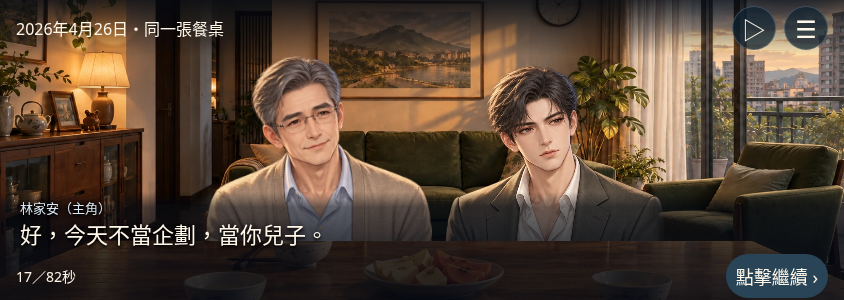
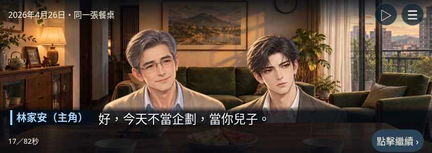
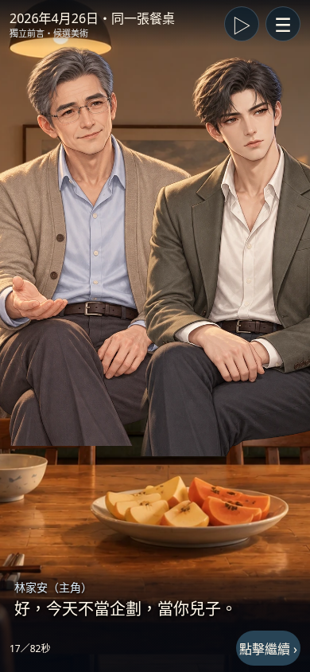
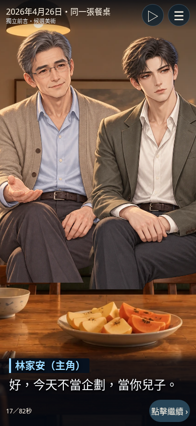
姓名、身分文字與色條同時呈現。正文維持白色，不以整句染色識別人物；本輪沒有改動人物亮度或反應鏡頭。
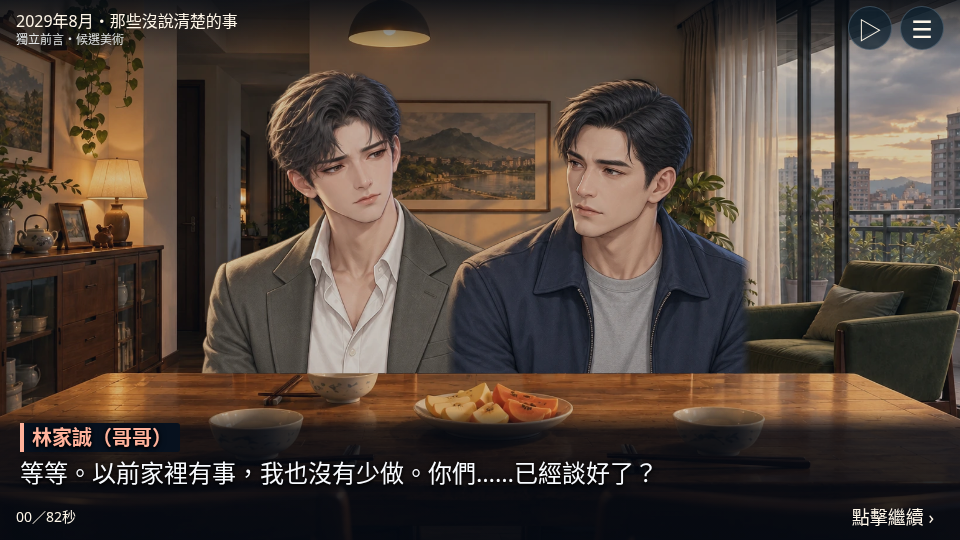
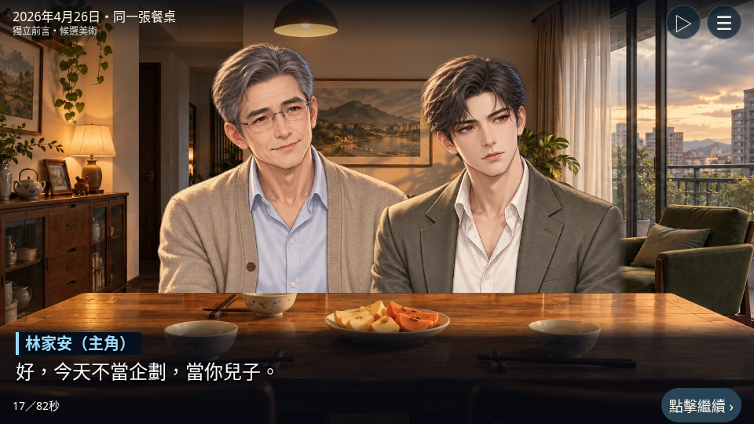
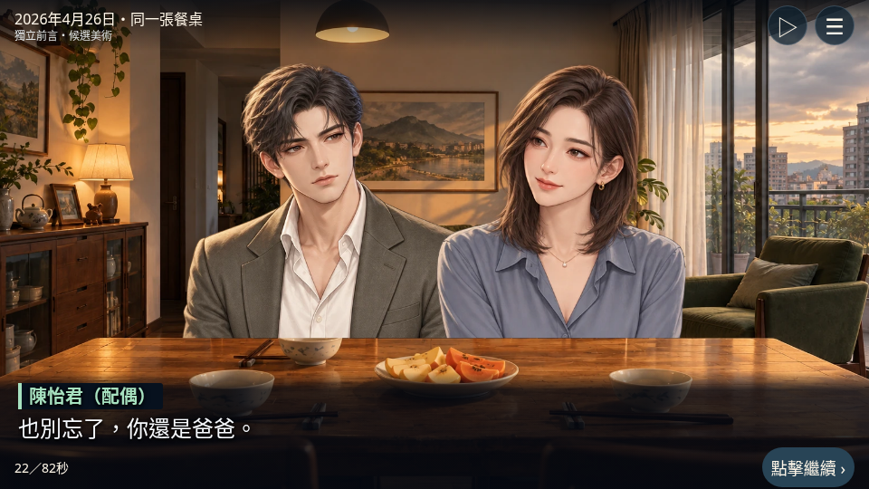
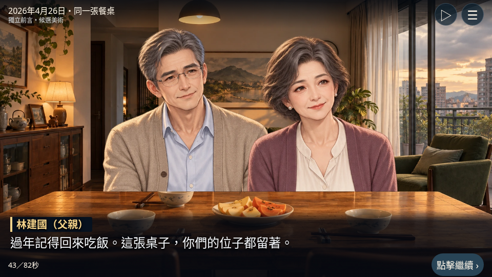
母親另用玫瑰色、妹妹用淡紫色。六個姓名色對固定深底 #07111e 的對比為10.92～13.15：1；文字完整保留姓名及身分，並非只靠顏色辨識。正文為 #f8fbff，保留暗色漸層與文字陰影；不把場景圖片的每一像素宣稱為固定對比值。
100%：姓名20px／正文24px；125%：25px／30px；150%：30px／36px。橫向短高度將姓名與台詞排在同一列；超長句保留全文展開，不壓縮字級。
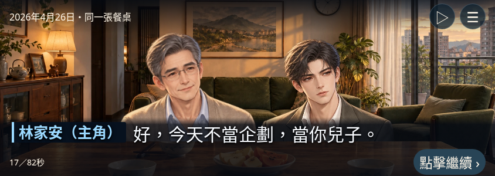
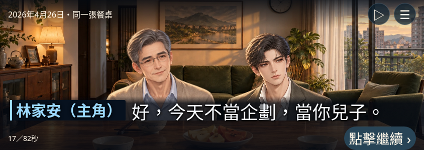
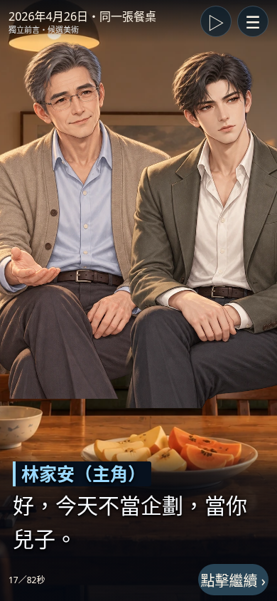
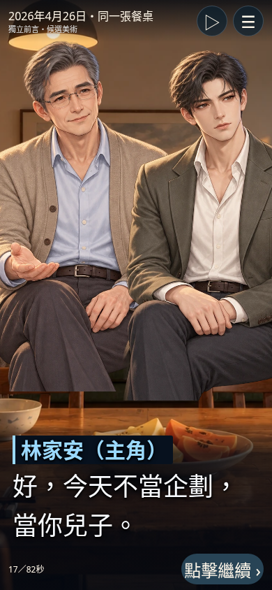
短片手動節錄同樣三句，依序為哥哥憤怒、哥哥悲傷、父親堅定；中間平靜台詞由實際「點擊繼續」操作略過。沒有新劇情、合成震動或自動代選。結尾靜止餘段依最後可錄畫面收尾，兩片長度略有不同，不是完整82秒新版錄影。
預覽選單提供「字幕情緒特效」開關。開關不重播當前台詞；可按重新觀看比較。關閉、系統減少動態或手動減少動態皆會取消特效並立即顯示完整文字。
只將憤怒、悲傷、堅定套用到3句既有台詞；震驚與低語僅在元件測試中驗證，沒有硬塞入其他對話。
互動與影片來自本機Chromium，不能視為iPhone實機通過；外部HTTPS檔案驗證由既有部署流程另行執行。